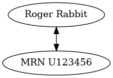
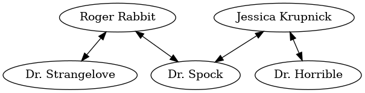
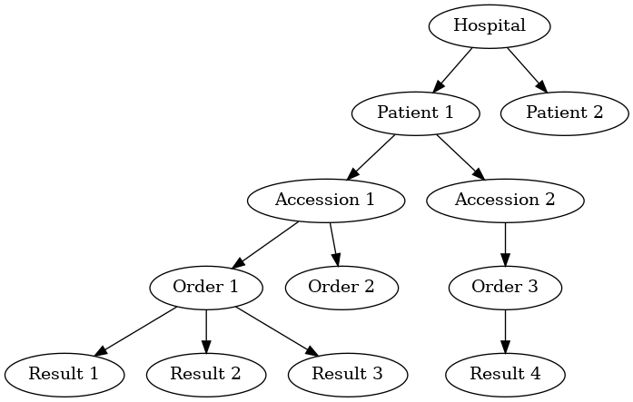

A practical introduction to databases and data management
Wed 11 June 2014 — Filed under lectures; tags: laboratory- Edit 2015-07-26: added a section on date formatting
- Edit 2016-07-11: add reference to Tidy Data
This post contains the content of a lecture prepared for Laboratory Medicine residents as part of a series on medical informatics.
Table of Contents
Objectives
- be aware that relational databases are a thing and can be described using some terms.
- get to know the different types of relations.
- see some examples of SQL in action.
- make a connection between the above and some useful habits (and harmful anti-patterns) for organizing laboratory and experimental data.
Relational database terminology
- relational database
- a tabular database with defined "relations" (which can be described in terms of relational algebra) among elements within and between tables.
- row
- contains a tuple or record representing a single item.
- column
- represents an attribute or field and corresponds to a labeled element of a record; all elements within a column are of the same data type.
- table
- a set of rows and columns.

Figure 1: Components of a table from a relational database. Source: wikipedia
- primary key
- a field (or multiple fields in combination) that uniquely identify a row. Can either be natural (i.e., consisting of attributes that already exist in the table), or surrogate (i.e., a new attribute with no "real world" meaning created for the purpose). An example of a combination of attributes serving as a primary key: name + DOB
| pkey | mrn | name | dob | sex |
| 1 | U123456 | Roger Rabbit | 1939-04-01 | M |
| 2 | U654321 | Jessica Krupnick | 1924-10-27 | F |
- index
- a data structure that improves the efficiency of data manipulation by reorganizing or clustering elements, typically as a tree.
- normalization
- when data is arranged to eliminate redundancy by dividing fields into separate tables, a database is said to be normalized. There is a tradeoff between normalization and complexity: a database may not be fully normalized to make queries simpler or more efficient (eg, by requiring fewer joins).
Relations
For more details, see http://en.wikipedia.org/wiki/Cardinality_(data_modeling)
one to one
- describes the relationship between two or more elements in which each element uniquely identifies the other (likely to be true only in a specific context).
- represented by elements in the same row
- eg, name <–> mrn (but think about whether this is always true!)
Graphically:

And in our database:
select mrn, name from patients;
| mrn | name |
| U123456 | Roger Rabbit |
| U654321 | Jessica Krupnick |
one to many
- in the context of a database, is represented by a pair of tables, in which an element or row can be related to multiple rows in another table
In our database:
select name, mrn, accession from patients join results using(mrn) group by accession order by mrn;
| name | mrn | accession |
| Roger Rabbit | U123456 | Acc1 |
| Roger Rabbit | U123456 | Acc2 |
| Jessica Krupnick | U654321 | Acc3 |
| Jessica Krupnick | U654321 | Acc4 |
many to many
- an entity in table A maps to more than one entity in table B, and vice-versa.
- a many-to-many relation between two tables is represented via a third junction table or cross-reference table.
- for example, each patient may see more than one physician, and each physician sees many patients.

In our relational database, this relation requires three tables, one for each of patients and physicians:
| doc_id | doc_name |
| P01 | Dr. Spock |
| P02 | Dr. Horrible |
| P03 | Dr. Strangelove |
And a junction table defining the many-to-many relationships:
select * from physician_patient;
| doc_id | mrn |
| P01 | U123456 |
| P01 | U654321 |
| P02 | U654321 |
| P03 | U123456 |
Now we can view all physician-patient relationships using a three-way join
select * from patients join physician_patient using(mrn) join physicians using(doc_id);
| pkey | mrn | name | dob | sex | doc_id | doc_name |
| 1 | U123456 | Roger Rabbit | 1939-04-01 | M | P01 | Dr. Spock |
| 1 | U123456 | Roger Rabbit | 1939-04-01 | M | P03 | Dr. Strangelove |
| 2 | U654321 | Jessica Krupnick | 1924-10-27 | F | P01 | Dr. Spock |
| 2 | U654321 | Jessica Krupnick | 1924-10-27 | F | P02 | Dr. Horrible |
Data types
Most databases and programming languages make a distinction between various data types (integers, real numbers, text, binary data, etc). Why is this important?
- Operations may be defined for some data types but not others (eg, division makes sense for real numbers but not text).
- Different data types require different amounts of space for storage. For example, in MySQL, a column containing an integer representation of true/false (eg, a boolean) requires only 1 byte per element, whereas the string "True" will typically occupy at least 4 bytes. This can become important when anticipating database requirements or managing large amounts of data.
In an SQL database, data types are defined along with the table schema:
.schema results
CREATE TABLE IF NOT EXISTS "results"( "mrn" TEXT, "accession" TEXT, "date" TEXT, "battery_code" TEXT, "test_code" TEXT, "value" TEXT, "flag" TEXT);
SQL
SQL (originally SEQUEL for Structured English Query Language) is a programming language for managing relational databases. Although versions of SQL are defined in internationally-recognized standards, various dialects are used depending on the implementation. Many relational database programs are out there. Some examples of relational database products using SQL that you are likely to come across include:
- PostgreSQL (free/open source)
- SQLite (free/open source)
- MySQL (free/open source)
- SQL Server (Microsoft, one of its flagship products)
- Various Oracle products (expensive and enterprise-y)
SQL was designed to be accessible to non-technical users!
Of these database engines, SQLite is probably the easiest to try out - unlike the others, the database consists of a single, portable file that can be accessed using either a command line interface or various GUI's available for your favorite platform (SQLite is found pretty much everywhere). For example, here is the SQLite database used for the examples in this post. If you're on a Mac, try this after downloading to your Downloads folder:
- open Terminal.app (press CMD+SPACE and type Term…)
- type this:
cd ~/Downloads sqlite3 results.db
You should see something like this:
SQLite version 3.7.13 2012-07-17 17:46:21 Enter ".help" for instructions Enter SQL statements terminated with a ";" sqlite>
Go ahead and try out some of the examples above. You can also download a GUI database browser (Wikipedia has a list) and try out your queries there.
Some examples of relational database operations using SQL
select
This query returns the entire table named results.
select * from results;
| mrn | accession | date | battery_code | test_code | value | flag |
| U123456 | Acc1 | 2014-06-02 | BMP | GLU | 135.0 | H |
| U123456 | Acc1 | 2014-06-02 | BMP | K | 4.0 | |
| U123456 | Acc2 | 2014-06-03 | CMP | GLU | 90.0 | |
| U123456 | Acc2 | 2014-06-03 | CMP | K | 2.7 | L |
| U654321 | Acc3 | 2014-06-02 | CMP | GLU | 85.0 | |
| U654321 | Acc3 | 2014-06-02 | CMP | K | 4.1 | |
| U654321 | Acc4 | 2014-06-03 | BMP | GLU | 75.0 | |
| U654321 | Acc4 | 2014-06-03 | BMP | K | 4.2 |
Use a where clause to specify a subset of rows.
select * from results where test_code = 'GLU' order by date;
| mrn | accession | date | battery_code | test_code | value | flag |
| U123456 | Acc1 | 2014-06-02 | BMP | GLU | 135.0 | H |
| U654321 | Acc3 | 2014-06-02 | CMP | GLU | 85.0 | |
| U123456 | Acc2 | 2014-06-03 | CMP | GLU | 90.0 | |
| U654321 | Acc4 | 2014-06-03 | BMP | GLU | 75.0 |
You can also specify a subset of columns.
select mrn, date, value from results where test_code = 'GLU' order by date;
| mrn | date | value |
| U123456 | 2014-06-02 | 135.0 |
| U654321 | 2014-06-02 | 85.0 |
| U123456 | 2014-06-03 | 90.0 |
| U654321 | 2014-06-03 | 75.0 |
join
Relations between tables are specified using a join clause. Here's a two-way join between two tables, patients and results.
select * from patients join results using(mrn);
| pkey | mrn | name | dob | sex | accession | date | battery_code | test_code | value | flag |
| 1 | U123456 | Roger Rabbit | 1939-04-01 | M | Acc1 | 2014-06-02 | BMP | GLU | 135.0 | H |
| 1 | U123456 | Roger Rabbit | 1939-04-01 | M | Acc1 | 2014-06-02 | BMP | K | 4.0 | |
| 1 | U123456 | Roger Rabbit | 1939-04-01 | M | Acc2 | 2014-06-03 | CMP | GLU | 90.0 | |
| 1 | U123456 | Roger Rabbit | 1939-04-01 | M | Acc2 | 2014-06-03 | CMP | K | 2.7 | L |
| 2 | U654321 | Jessica Krupnick | 1924-10-27 | F | Acc3 | 2014-06-02 | CMP | GLU | 85.0 | |
| 2 | U654321 | Jessica Krupnick | 1924-10-27 | F | Acc3 | 2014-06-02 | CMP | K | 4.1 | |
| 2 | U654321 | Jessica Krupnick | 1924-10-27 | F | Acc4 | 2014-06-03 | BMP | GLU | 75.0 | |
| 2 | U654321 | Jessica Krupnick | 1924-10-27 | F | Acc4 | 2014-06-03 | BMP | K | 4.2 |
select patients.name, results.date, tests.test_name, results.value, results.flag from results join tests using(test_code) join patients using(mrn) where test_code = 'K';
| name | date | test_name | value | flag |
| Roger Rabbit | 2014-06-02 | Potassium | 4.0 | |
| Roger Rabbit | 2014-06-03 | Potassium | 2.7 | L |
| Jessica Krupnick | 2014-06-02 | Potassium | 4.1 | |
| Jessica Krupnick | 2014-06-03 | Potassium | 4.2 |
group and aggregate
select name, test_code, min(value) from patients join results using(mrn) group by mrn, test_code;
| name | test_code | min(value) |
| Roger Rabbit | GLU | 135.0 |
| Roger Rabbit | K | 2.7 |
| Jessica Krupnick | GLU | 75.0 |
| Jessica Krupnick | K | 4.1 |
Hierarchical databases
Hierarchical databases organize data in a tree-like structure. Data is represented as a graph of one-to-many (parent -> child) relations.

- hierarchical databases are arguably extremely well-suited for modeling healthcare data.
- can be used to efficiently represent data that would otherwise require many tables in a well-normalized relational database.
- depending on the structure of the hierarchy, certain queries can be extremely efficient: eg, all orders for Patient 1 can be found by traversing only the subtree containing data for that patient, which might represent only a tiny fraction of the entire database.
- other sorts of queries can be extremely inefficient: eg, finding all results of a certain type might require traversal of the entire tree!
- guess what: major healthcare applications such as the VA system (VistA), Sunquest FlexiLab, and many Epic products use a hierarchical database implemented using the MUMPS language.
Data management patterns and antipatterns
A basic understanding of database applications, relations, and data types can help guide good practices for managing data. It makes perfect sense to organize and collect (limited amounts of) data in a spreadsheet, but it helps a lot to anticipate that you may want to transfer that data into a database or use software for statistical analysis or producing graphical output (such as R). This is a lot easier if you keep a few rules in mind. Here are some tips. Note that Tidy Data by Hadley Wickham provides an excellent discussion of the ways in which data can be "tidy" or "messy."
name fields sensibly
- When naming column headers, stick to lowercase letters and underscores only (numbers are ok after the first character).
| bad | good |
|---|---|
| Patient # | patient_id |
| infection? | is_infected |
- If you have multiple tables, be careful to name fields consistently (don't use "DOB" in one place and "birth_date" in another).
- If possible, don't use SQL keywords for column names.
don't mix data types
Values in a column are expected to be the same data type. Some databases will produce an error if you try to mix data types (eq, putting a string in a column identified as an integer type). Others may attempt to coerce data to the same type, producing unexpected results. Even without an error, mixing data types greatly complicates writing queries. For example, how can we find values greater than 10 in this table?
| run_id | value |
|---|---|
| 1 | 5 |
| 2 | cancelled |
| 3 | 11 |
| 4 | < 2 |
| 5 | 4 |
In this case, it's better to create another column to contain the non-numeric values.
| run_id | value | comment |
|---|---|---|
| 1 | 5 | |
| 2 | cancelled | |
| 3 | 11 | |
| 4 | < 2 | |
| 5 | 4 |
tall, not wide
Excel and EMR applications have made us accustomed to viewing data as a square matrix.
| test_name | 2014-01-01 | 2014-01-02 | 2014-01-03 | 2014-01-04 |
|---|---|---|---|---|
| Sodium | 135.0 | 137.0 | 150.0 | |
| Potassium | 3.5 | 4.0 | 3.7 |
This is great for some purposes: it allows us to easily compare the values of these two tests for this one patient over time. Or perhaps the square is transposed:
| date | Sodium | Potassium |
|---|---|---|
| 2014-01-01 | 135.0 | |
| 2014-01-02 | 137.0 | 3.5 |
| 2014-01-03 | 4.0 | |
| 2014-01-04 | 150.0 | 3.7 |
However, both of these are lousy formats for storing or manipulating data:
- they are likely to be sparse, where many cells are missing data, and requiring as many columns as there are dates (first table) or tests (second table) in the entire data set.
- adding data for an addition test or patient is cumbersome.
- it is not possible to associate additional attributes with each value.
Here's an improved representation of the above data:
| test_name | date | value | method | comment |
|---|---|---|---|---|
| Sodium | 2014-01-01 | 135.0 | serum | |
| Sodium | 2014-01-02 | 137.0 | ABG | |
| Sodium | 2014-01-04 | 150.0 | serum | confirmed in duplicate |
| Potassium | 2014-01-02 | 3.5 | ABG | |
| Potassium | 2014-01-03 | 4.0 | serum | |
| Potassium | 2014-01-04 | 3.7 | serum |
This table has a fixed number of columns. Adding new data is as simple as tacking rows onto the bottom. We can annotate values with arbitrary attributes, such as methods or comments. It's even easy to aggregate data from multiple patients by adding another column.
be consistent
Composing queries will be easier if you are consistent in your representations of the data. I've frequently come across data like this:
| subject | antibiotics | growth | antibiotic |
|---|---|---|---|
| 1 | Y | + | azith. |
| 2 | N | - | azithromycin |
| 3 | yes | + | penicillin |
| 4 | n | + | Penicillin |
- within a column, pick a value and stick with it - it's awfully hard to write a query that accommodates multiple variants of the same term or concept.
- be consistent from column to column, as well. In the example above, we see both yes/no and +/- used as boolean values. How about this instead:
| subject | antibiotics | growth | antibiotic |
|---|---|---|---|
| 1 | yes | yes | azithromycin |
| 2 | no | no | azithromycin |
| 3 | yes | yes | penicillin |
| 4 | no | yes | penicillin |
use multiple tables (normalize the data)
Here's where understanding relations is useful. When I ask for data from the laboratory system, I typically get results back that look something like this:
select results.*, b.battery_name, t.test_name, t.ref_range from results join tests t using(test_code) join batteries b using(battery_code);
(The data isn't actually stored like this in the database, but when the request for data includes all of the above fields, it winds up denormalized in the process of fitting it into a single output table).
In this table, test_code uniquely identifies test_name and ref_range, and battery_code uniquely identifies battery_name, so there's no need to include the last three columns in our table of results (imagine having millions of rows like this) - we can store these test and battery attributes in separate tables and perform joins as necessary.
It's worth having a look at the classic short article A Simple Guide to Five Normal Forms in Relational Database Theory
Use a standard format for dates and times

Figure 2: Obligatory xkcd (https://xkcd.com/1179/)
American humans might write today's date as 7/23/15, or perhaps 07/23/2015 or July 23, 2015; European humans might write it as 23 July 2015 or 23/7/15.
None of these formats are… (trying to be polite here) exactly optimal. For one thing, neither format results in alphanumeric sorting in chronological order. But much worse, it's hard to guess exactly what format the date is actually in, so parsing is a chore.
It turns out that there's a standard for representing dates and times that addresses these issues, and also allows the representation of time zone (which we won't get into right now): this standard is called ISO 8601. Using this standard, today would be written 2015-07-23. Please be nice and write dates like this. Follow the link to read more (you will learn that right now the ISO 8601 timestamp is something like 2015-07-23T16:55:02+17:00).